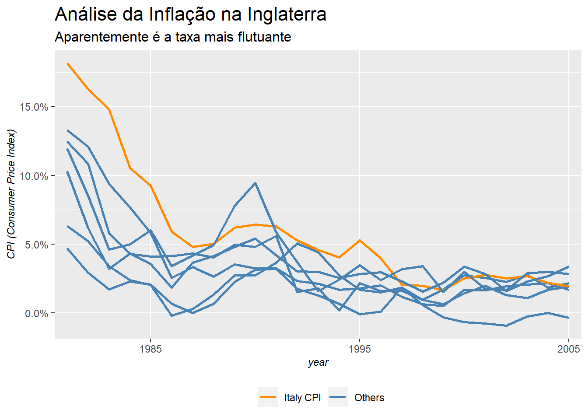

Econometria é uma ferramenta (ou técnica) muito usada por economistas, estatísticos e também por outras ciências. Uma definição encontrada nos livros básicos é:
“Econometria é a aplicação de modelos estatísticos em dados econômicos”
Com base nesta definição, é importante entender a definição de modelos estatísticos e dados econômicos. Em modelos estatísticos, podemos interpretar como equações matemáticas que buscam traduzir um fenômeno estudado, sendo aplicado à coleta, análise e interpretação de dados ou frequência de eventos visando modelar a aleatoriedade e a incerteza. Por outro lado, dados econômicos não possuem uma definição tão clara, porém sabendo que a ciência econômica atua no estudo da alocação dos recursos da sociedade, é possível inferir quando os dados são econômicos.
Estou apresentando estas definições por conta de que neste post irei focar em um livro de Econometria Básica muito usado nos cursos de Economia. O livro foi escrito por Damodar N. Gujarati e Dawn C. Porter e contêm muitos exercícios usando dados econômicos que achei bastante interessante. Pelo fato de o livro não mostrar as soluções dos problemas, achei válido fazer um post com as soluções de alguns dos exercícios.
Os dados usados nos exercícios estarão em meu repositório do Github, em formato “.txt”. Para acessar um dataset, basta usar o seguinte comando:
# Primeiro chame o pacote 'readr' que contém a função 'read_csv'
library(readr)
# Exemplo com o dataset 'table_1.3'
table_1.3_cpi <- readr::read_delim(file = "https://raw.githubusercontent.com/FranciscoPiccolo/franciscopiccolo.github.io/master/datasets/2020-03-01-basic_econometrics_by_gujarati/table_1.3_cpi.txt",
delim = " ")Porém, ao invés de sempre usar este caminho extenso para trazer o dataset, eu posso criar uma variável contendo este caminho e mudar apenas a última parte, em que indico o nome do dataset (i.e. “table_1.3_ipc.txt”).
dataset_path <- "https://raw.githubusercontent.com/FranciscoPiccolo/franciscopiccolo.github.io/master/datasets/2020-03-01-basic_econometrics_by_gujarati/"Com isso, para chamar um dataset, basta usar um comando mais curto, com a função “paste”.
table_1.3_cpi <-
readr::read_delim(file = paste(dataset_path,
"table_1.3_cpi.txt",
sep = ""),
delim = " ")Agora vamos ao que interessa. Para desenvolver os exercícios, vou usar os pacotes abaixo e também uma função para padronizar o design dos gráficos.
library(tidyverse)
library(patchwork)
library(gt)
library(modelsummary)
# Função para padronizar o design dos gráficos
theme_graph <- function(){
theme(
plot.title = element_text(size = 16),
plot.subtitle = element_text(size = 12),
plot.caption = element_text(face = "italic", size = 9),
axis.text = element_text(size = 9),
axis.title = element_text(face = "italic", size = 9),
strip.background = element_rect(fill = "grey"),
strip.text = element_text(face = "bold"),
legend.position = "bottom",
legend.title = element_blank()
)
}a. Com base nos dados fornecidos, calcule a taxa de inflação de cada país.
Para resolver este exercício, vamos trazer o dataset necessário.
table_1.3_cpi <-
readr::read_delim(file = paste(dataset_path,
"table_1.3_cpi.txt",
sep = ""),
delim = " ") %>%
mutate(year = as.character(year))Vamos também ver uma amostra destes dados:
table_1.3_cpi %>%
head(5) %>%
knitr::kable(format.args = list(big.mark = ".", decimal.mark = "."))| year | usa | canada | japan | france | germany | italy | uk |
|---|---|---|---|---|---|---|---|
| 1980 | 824 | 761 | 910 | 722 | 867 | 639 | 785 |
| 1981 | 909 | 856 | 953 | 818 | 922 | 755 | 879 |
| 1982 | 965 | 949 | 981 | 917 | 970 | 878 | 954 |
| 1983 | 996 | 1.004 | 998 | 1.003 | 1.003 | 1.008 | 998 |
| 1984 | 1.039 | 1.047 | 1.021 | 1.080 | 1.027 | 1.114 | 1.048 |
A inflação para cada país será a variação de um período com base no período anterior. Para realizar este cálculo, basta usar o ‘mutate’ e a função ‘lag’.
# Usando (pacote gt para esse exercício) >> Grammar of Tables
table_1.3_cpi %>%
mutate(usa_cpi = usa/lag(usa,1)-1,
canada_cpi = canada/lag(canada,1)-1,
japan_cpi = japan/lag(japan,1)-1,
france_cpi = france/lag(france,1)-1,
germany_cpi = germany/lag(germany,1)-1,
italy_cpi = italy/lag(italy,1)-1,
uk_cpi = uk/lag(uk,1)-1) %>%
select(year, usa_cpi, canada_cpi, japan_cpi, france_cpi, germany_cpi, italy_cpi, uk_cpi) %>%
tidyr::gather("country","values", 2:8) %>%
filter(!is.na(values)) -> country_cpi
country_cpi %>%
tidyr::spread("country","values") %>%
gt::gt() %>%
gt::tab_header(title = md("**Inflação (CPI) para os Países Selecionados**"),
subtitle = "De 1981 Até 2005") %>%
gt::tab_source_note(source_note = "Fonte: FMI") %>%
gt::tab_footnote(footnote = "Index = 100",
locations = cells_body(columns = vars(year),
rows = 4)) %>%
fmt_percent(columns = 2:8)| Inflação (CPI) para os Países Selecionados | |||||||
|---|---|---|---|---|---|---|---|
| De 1981 Até 2005 | |||||||
| year | canada_cpi | france_cpi | germany_cpi | italy_cpi | japan_cpi | uk_cpi | usa_cpi |
| 1981 | 12.48% | 13.30% | 6.34% | 18.15% | 4.73% | 11.97% | 10.32% |
| 1982 | 10.86% | 12.10% | 5.21% | 16.29% | 2.94% | 8.53% | 6.16% |
| 1983 | 5.80% | 9.38% | 3.40% | 14.81% | 1.73% | 4.61% | 3.21% |
| 19841 | 4.28% | 7.68% | 2.39% | 10.52% | 2.30% | 5.01% | 4.32% |
| 1985 | 4.11% | 5.83% | 2.04% | 9.25% | 2.06% | 6.01% | 3.56% |
| 1986 | 4.13% | 2.54% | −0.19% | 5.92% | 0.67% | 3.42% | 1.86% |
| 1987 | 4.32% | 3.33% | 0.29% | 4.81% | 0.00% | 4.18% | 3.65% |
| 1988 | 4.05% | 2.64% | 1.33% | 5.03% | 0.67% | 4.93% | 4.14% |
| 1989 | 4.95% | 3.54% | 2.73% | 6.20% | 2.27% | 7.80% | 4.82% |
| 1990 | 4.80% | 3.26% | 2.75% | 6.44% | 3.15% | 9.45% | 5.40% |
| 1991 | 5.61% | 3.24% | 3.65% | 6.30% | 3.23% | 5.87% | 4.21% |
| 1992 | 1.54% | 2.33% | 5.07% | 5.28% | 1.74% | 3.70% | 3.01% |
| 1993 | 1.79% | 2.14% | 4.42% | 4.57% | 1.28% | 1.60% | 2.99% |
| 1994 | 0.20% | 1.67% | 2.74% | 4.05% | 0.68% | 2.42% | 2.56% |
| 1995 | 2.16% | 1.78% | 1.68% | 5.27% | −0.08% | 3.48% | 2.83% |
| 1996 | 1.59% | 2.02% | 1.50% | 3.99% | 0.08% | 2.40% | 2.95% |
| 1997 | 1.63% | 1.19% | 1.85% | 2.06% | 1.84% | 3.18% | 2.29% |
| 1998 | 0.96% | 0.65% | 0.94% | 1.97% | 0.58% | 3.40% | 1.56% |
| 1999 | 1.71% | 0.52% | 0.65% | 1.66% | −0.33% | 1.52% | 2.21% |
| 2000 | 2.74% | 1.68% | 1.43% | 2.52% | −0.66% | 2.99% | 3.36% |
| 2001 | 2.55% | 1.65% | 1.97% | 2.76% | −0.74% | 1.75% | 2.85% |
| 2002 | 2.25% | 1.94% | 1.31% | 2.52% | −0.92% | 1.67% | 1.58% |
| 2003 | 2.78% | 2.08% | 1.09% | 2.66% | −0.25% | 2.90% | 2.28% |
| 2004 | 1.86% | 2.16% | 1.69% | 2.19% | 0.00% | 3.00% | 2.66% |
| 2005 | 2.15% | 1.70% | 1.92% | 1.95% | −0.34% | 2.83% | 3.39% |
| Fonte: FMI | |||||||
|
1
Index = 100
|
|||||||
b. Represente graficamente a taxa de inflação de cada país em relação ao tempo (isto é, use o eixo horizontal para o tempo e o eixo vertical para a taxa de inflação).
country_cpi %>%
ggplot2::ggplot()+
geom_line(mapping = aes(x = year,
y = values,
group = country,
color = country))+
scale_y_continuous(labels = scales::percent)+
scale_color_brewer(type = "qual", palette = 2)+
scale_x_discrete(breaks = c("1985","1995","2005"))+
theme_graph()+
labs(title = "Inflação dos Países Selecionados",
y = "CPI (Consumer Price Index)")
c. Que conclusões gerais é possível tirar sobre a evolução da inflação nos sete países?
Há uma tendência de queda nos países selecionados após 1985, onde todos mantiveram uma taxa abaio de 5% ao ano.
d. Em que país a taxa de inflação parece ser a mais flutuante? Há alguma explicação para isso?
A tabela abaixo mostra um resumo da inflação de cada país, já transformada em percentual.
country_cpi %>%
mutate(values = values*100) %>%
tidyr::spread("country","values") %>%
modelsummary::datasummary_skim()| Unique (#) | Missing (%) | Mean | SD | Min | Median | Max | ||
|---|---|---|---|---|---|---|---|---|
| canada_cpi | 25 | 0 | 3.7 | 2.8 | 0.2 | 2.7 | 12.5 | |
| france_cpi | 25 | 0 | 3.6 | 3.4 | 0.5 | 2.2 | 13.3 | |
| germany_cpi | 25 | 0 | 2.3 | 1.6 | -0.2 | 1.9 | 6.3 | |
| italy_cpi | 25 | 0 | 5.9 | 4.6 | 1.7 | 4.8 | 18.2 | |
| japan_cpi | 24 | 0 | 1.1 | 1.5 | -0.9 | 0.7 | 4.7 | |
| uk_cpi | 25 | 0 | 4.3 | 2.7 | 1.5 | 3.4 | 12.0 | |
| usa_cpi | 25 | 0 | 3.5 | 1.8 | 1.6 | 3.0 | 10.3 |
O desvio padrão (SD) mais elevado é o da Itália, talvez por ter um outlier no valor máximo (de 18.2%). O gráfico abaixo irá dar destaque para este país para vermos se é evidente que sua flutuação é maior que a dos outros.
country_cpi %>%
mutate(is_floating = as.character(case_when(country == "italy_cpi" ~ "Italy CPI",
TRUE ~ "Others"))) %>%
ggplot2::ggplot()+
geom_line(mapping = aes(x = year,
y = values,
group = country,
color = is_floating),
size = 1)+
scale_y_continuous(labels = scales::percent)+
scale_color_manual(values = c("Italy CPI" = "dark orange",
"Others" = "steel blue"),
name = "Inflação da Inglaterra = 1")+
scale_x_discrete(breaks = c("1985","1995","2005"))+
theme_graph()+
labs(title = "Análise da Inflação na Itália",
subtitle = "Aparentemente é a taxa mais flutuante",
y = "CPI (Consumer Price Index)")
a. Usando a Tabela 1.3, represente as taxas de inflação do Canadá, França, Alemanha, Itália, Japão e Reino Unido em relação à taxa de inflação dos Estados Unidos.
b. Faça um comentário geral sobre o comportamento das taxas de inflação dos seis países em relação à inflação dos Estados Unidos.
c. Se você constatar que as taxas de inflação dos seis países evoluem no mesmo sentido que a dos Estados Unidos, isso sugere que a inflação dos Estados Unidos “causa” inflação nos outros países? Justifique.
a. Represente graficamente a evolução das taxas de câmbio ao longo do tempo e comente sobre o comportamento geral dessa evolução.
b. Diz-se que o dólar apreciou-se quando pode comprar mais unidades de moeda estrangeira. Opostamente, diz-se que se depreciou quando compra menos unidades da moeda estrangeira. No período 1985–2006, qual foi o comportamento geral do dólar dos Estados Unidos? Aproveite para pesquisar em algum livro de macroeconomia ou de economia internacional os fatores que determinam a apreciação ou depreciação de uma moeda.
a. Trace um gráfico com as impressões no eixo vertical e os gastos com publicidade no eixo horizontal.
b. O que você poderia dizer sobre a natureza da relação entre as duas variáveis?
c. Examinando o gráfico, você acha que vale a pena anunciar? Pense em todos os comerciais veiculados em finais de campeonatos de esportes ou no horário nobre.